PETISCO
DE FORNO
pra cachorro
que sempre pede bis

FRANGO & BATATA-DOCE
petisco crocante assado
assado no forno, sem corante.
crocante por fora, macio por dentro.
para cães de todos os tamanhos.
ADULTO
200 g